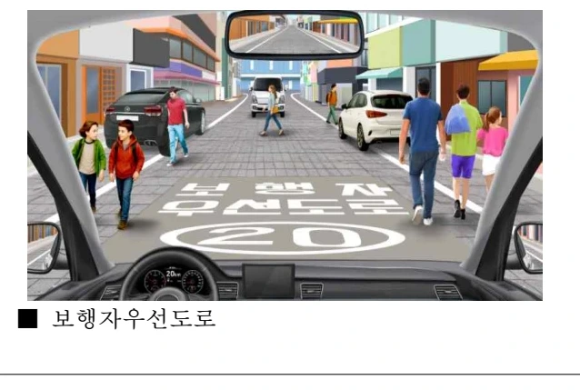

823. Which of the following are the TWO safest ways to proceed in the given situation?

- ①Drive close to adult pedestrians because pedestrians-first roads apply only to children.
- ②Maintain a safe distance from pedestrians while driving.
- ③Honk to urge a group of pedestrians walking side by side to walk in a single file.
- ④Slow down or stop as needed to avoid interfering with pedestrian traffic.
- ⑤You may drive at 20 km/h or faster as long as you do not interfere with pedestrian traffic.
Show answer
Answer
② Maintain a safe distance from pedestrians while driving.
④ Slow down or stop as needed to avoid interfering with pedestrian traffic.
Reference
Article 27 of the Road Traffic Act. When passing by a pedestrian on a pedestrian priority road, you must drive slowly at a safe distance, and if it interferes with the passage of pedestrians, you must slow down or stop temporarily to allow pedestrians to pass safely.
Reference text is a machine translation for study.